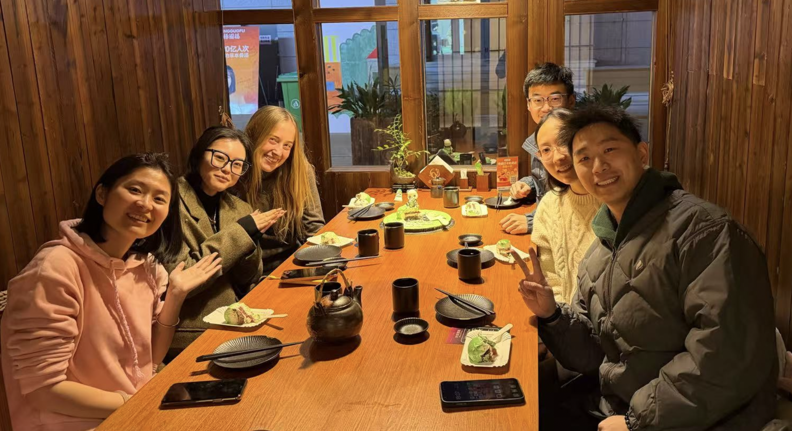

Day 6
Field Trip
Today, Vanessa, Mr. Gu, and I drove out to the suburbs of Jiangsu to visit the motor controller manufacturing center that are supplying HydoTech with the CVM controllers. Specifically, the device we were going to look at was the one that takes the CVM data that I had been analyzing over the past few days. This same device is those detailed in the electrical schematics that I had looked at. The latter part of this day was a heavy-hitting technical day.
The drive through the countryside was beautiful, and gave me a good idea of what Jiangsu countryside actually looks like. I thought the factory was in the countryside, but I was completely wrong. The factory is still considered to be in Nanjing- this just shows you how massive the city is! Even the town in the countryside that we visited was very big and had lots of apartment buildings that were at least over 15 stories. In the US, I would call this a little city, but here it is considered a village. Before arriving at the manufacturing center, we had a delicious lunch from the region.

Stop 1: The R&D Field Station
We saw a testbench for a big electrolyzer that the clients wanted Mr. Gu to take a look at. Their testbench was further away, and simply in the middle of some field. I was curious why this was the case, potentially that they didn’t want others taking their IP, but didn’t ask. Both Mr. Gu and the Gentleman from the manufacturing center studied in Aachen, and the two of them had the same advisor at Tsinghua University. I spoke a bit of German with this Gentleman.
The testbench is quite a machine, consuming CO2 and recycling its own heat. Seeing technology with that kind of prospect for the future was inspiring.
The region we drove through going back to the center was entirely industrial. This was, again, another interesting insight for me into China.
Stop 2: Manufacturing
We toured the assembly lines (a mix of full and partial automation) where they seal the controller PCBs. I was really surprised by all the different projects undertaken by the company. First the electrolyser testbench, which is mostly electrochemistry theory, and has hardly anything to do with embedded controllers. They also do all of their own PCB assembly which, for the amount of PCBs they assemble potentially makes sense, but is a whole new set of infrastructure and work that has to be accounted for. Then, all of the sealing of the controller PCBs and actual assembly. The Gentleman also informed me that they do all the software for the chips- which I can only imagine is a entire new undertaking, something a whole different company could rationally be hired to do.
We were also taken to another building where walked through the vibration and environmental testing rooms—rigorous stuff. As manufacturers of such products, you have liability for what you ship to be working. All of this testing needs to be accounted for as well.
The CVM Test
Finally, we got our hands on the HydoTech CVM controller system I had studied the day before. Here is how the system flow worked:
- Distribution: Test voltage leads to probes connecting to the electrolyzer substrate.
- Conversion: Inside the controller, voltage is converted to a two-byte representation and biased upward (to avoid negatives).
- Transmission: Transmission: Data is sent via two CAN ports \(\rightarrow\) CAN-to-Ethernet gateway \(\rightarrow\) Modbus conversion \(\rightarrow\) Gateway.
- Cloud: Over the router, data goes via 5G to the server.
We validated the real-time data on the computer using a multimeter.

Panda Cake and Japanese
We returned to Nanjing for a dinner with the whole crew: Yutong, Yubo, Mr. Gu, Muyi, and Vanessa. The restaurant was really sweet, and we got to sit in our own little cabin with folded doors closed. It was a bit mroe intimate and made for a great ambiance. Overall, the dinner had great company and excellent food, headlined by a green cake featuring edible pandas. The Japanese food served for dinner was also really tasty.
